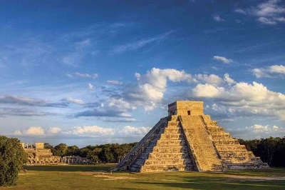

Chichén Itzá
Chichén Itzá (en maya: Boca-del-pozo (chichén) de los brujos-de-agua (Itzá)) es uno de los principales sitios arqueológicos de la península de Yucatán, en México. Está ubicado en el municipio de Tinum, en el estado de Yucatán. Consistió en una ciudad2 o un centro ceremonial, que pasó por diversas épocas constructivas e influencias de los distintos pueblos que la ocuparon y que la impulsaron desde su fundación.
Vestigio importante y renombrado de la civilización maya, las edificaciones principales que ahí perduran corresponden al periodo denominado clásico tardío o postclásico temprano (800-1100 d. C.). Fue inscrita en la lista del Patrimonio de la Humanidad por la Unesco en 1988.
El 7 de julio de 2007, el Templo de Kukulcán, ubicado en Chichén Itzá, fue reconocido como una de las nuevas siete maravillas del mundo moderno, por una iniciativa privada sin el apoyo de la Unesco, pero con el reconocimiento de millones de votantes alrededor del mundo.
Arquitectura
Las edificaciones de Chichén Itzá muestran un gran número de elementos arquitectónicos e iconográficos que algunos historiadores han querido llamar mexicanizados. Lo cierto es que es visible la influencia de las culturas provenientes del altiplano mexicano, y la mezcla con el estilo Puuc, proveniente de la zona alta de la península, de la arquitectura clásica maya. La presencia de estos elementos procedentes de las culturas del altiplano fueron concebidas hasta hace algunos años como producto de una migración masiva o conquista de la ciudad maya por parte de grupos toltecas.
Estudios más recientes sugieren que pudieron haber sido la expresión cultural de un sistema político muy extendido y prestigioso durante el posclásico temprano en toda Mesoamérica. Al paso de los años a la humanidad nos ha servido para realizar conocimiento arquitectónicos, ya que cuenta con conocimientos matemáticos para la realización de construcciones de grandes dimensiones.
Historia
Chichén Itzá fue fundada hacia el año 500 D. C., durante «la primera bajada o bajada pequeña del oriente» que refieren las crónicas, por los chanes de Bacalar (que después se llamaron itzá y más tarde cocomes). Habiendo establecido los clanes la capital de su gobierno en Chichén Itzá en la época señalada, provenientes de Bacalar, continuaron su trayecto de oriente a poniente en la península de Yucatán, al cabo del cual fundarían también otras ciudades importantes como Ek Balam, Izamal, Motul, T'Hó, la actual Mérida de Yucatán, y Champotón.
Ya hacia el final del período clásico tardío, Chichén se convirtió en uno de los más importantes centros políticos de las tierras del Mayab. Para el principio del posclásico (desde el año 900 hasta el 1500), la ciudad se había consolidado como principal centro de poder en la península yucateca.
